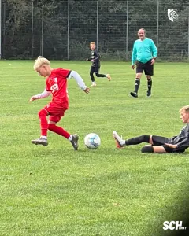
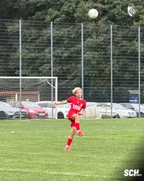
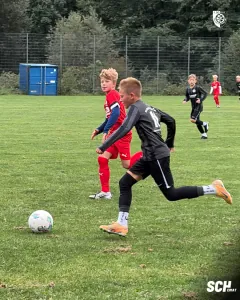
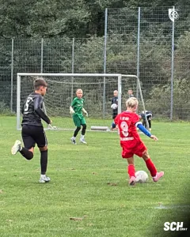
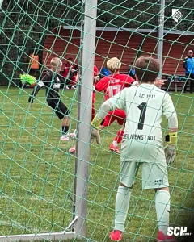

Starke Reaktion nach Rückstand: U13 zieht in die nächste Pokalrunde ein
Unsere U13 steht in der nächsten Pokalrunde. Die Mannschaft von Trainer Andreas Seipel setzte sich am Samstagvormittag auf dem Stelzenberg mit 3:1 (1:1) gegen den SV Blau-Weiß 91 Bad Frankenhausen durch. Dabei mussten die Blau-Weißen zunächst einem Rückstand hinterherlaufen. Maxim Seipel brachte den SCH noch vor der Pause zurück ins Spiel, ehe Zacharias Kobold und Elias Eckardt mit zwei Treffern kurz nach dem Seitenwechsel für die Entscheidung sorgten.
Gute Chancen, aber das erste Tor fällt auf der anderen Seite
Die jungen Blau-Weißen kamen mit viel Energie in die Partie und suchten früh den Weg nach vorne. Bereits in der Anfangsphase erspielte sich die Mannschaft einige gute Möglichkeiten. Nur die Belohnung fehlte. Vor dem gegnerischen Tor wollte der entscheidende Abschluss zunächst nicht gelingen. Bad Frankenhausen machte es in der 21. Minute besser. Pfeiffer nutzte eine Gelegenheit der Gäste und brachte die Blau-Weißen vom Kyffhäuser mit 1:0 in Führung. Ein Rückstand, der den Spielverlauf zu diesem Zeitpunkt auf den Kopf stellte. Viel wichtiger war allerdings die Reaktion darauf. Unsere Jungs blieben ruhig, spielten weiter und ließen sich von dem Gegentreffer nicht aus ihrem Rhythmus bringen. Neun Minuten später folgte die verdiente Antwort. Maxim Seipel traf in der 30. Minute zum 1:1. Damit war die Partie wieder offen und die gute Arbeit der ersten Hälfte hatte sich doch noch auf der Anzeigetafel bemerkbar gemacht. Mit dem Unentschieden ging es in die Pause.
Zwei Minuten bringen den SCH auf Kurs
Nach dem Seitenwechsel wurde aus der guten Reaktion eine Führung. Unsere U13 knüpfte an ihren Auftritt aus dem ersten Durchgang an und belohnte sich nun konsequenter für ihre Möglichkeiten. In der 40. Minute war Zacharias Kobold zur Stelle. Sein Treffer zum 2:1 drehte die Partie endgültig zugunsten der Blau-Weißen. Viel Zeit zum Sortieren blieb den Gästen danach nicht. Gerade einmal zwei Minuten später schlug der SCH erneut zu. Elias Eckardt erzielte in der 42. Minute das 3:1. Innerhalb kürzester Zeit hatte sich aus dem 1:1 ein Zwei-Tore-Vorsprung entwickelt.
Zusammenspiel stimmt, nur die Chancenverwertung fehlt
Besonders nach der Pause zeigte die Mannschaft von Andreas Seipel ein gutes Zusammenspiel. Die Blau-Weißen erspielten sich weitere Möglichkeiten und hätten das Ergebnis noch deutlicher gestalten können.
Genau dort blieb an diesem Vormittag noch etwas liegen. Schon vor dem Rückstand waren Chancen vorhanden gewesen, später boten sich weitere Gelegenheiten. Die Verwertung passte nicht immer zum Aufwand, den die Mannschaft betrieb. Am Ausgang der Partie änderte das nichts mehr. Nach dem schnellen Doppelschlag durch Kobold und Eckardt brachte unsere U13 den Vorsprung ins Ziel.
Moral gezeigt und das Spiel gedreht
Gerade die Art und Weise macht diesen Pokalerfolg wertvoll. Ein Gegentor nach 21 Minuten kann eine junge Mannschaft aus dem Tritt bringen. Diesmal passierte genau das nicht. Der SCH blieb bei seinem Spiel, suchte weiter seine Möglichkeiten und schaffte noch vor der Pause den Ausgleich. Nach dem Seitenwechsel folgte die stärkste Phase. Zwei Tore innerhalb von zwei Minuten drehten das Spiel vollständig. Danach ließ sich die Mannschaft den Einzug in die nächste Runde nicht mehr nehmen. So stand nach dem Abpfiff ein verdienter 3:1-Heimsieg. Drei verschiedene Torschützen, eine gute Reaktion auf den Rückstand und vor allem das Ticket für die nächste Runde machten den Pokalvormittag perfekt.
Spieldaten
SC Heiligenstadt U13 – SV Blau-Weiß 91 Bad Frankenhausen 3:1 (1:1)
SC Heiligenstadt: Mähler – Perriello (36. Eckardt) – Pfeifer – Fischer (26. Ringleb) – Fromm (36. Drößler) – Clasen – Seipel (36. Kobold) – Hedrich – Effenberger
SV Blau-Weiß 91 Bad Frankenhausen
Strejc – Gödicke – Reimann – Nöll – Fuchs (23. Hartwig) – Heidick – Zarefulov – Bäker (18. Koch) – Pfeiffer (L. Strejc)
Schiedsrichter
Rippchen
Tore:
0:1 Pfeiffer (21.), 1:1 Seipel (30.), 2:1 Kobold (40.), 3:1 Eckardt (42.)





Quelle: www.sc1911-heiligenstadt.de · Stand 06.10.2026